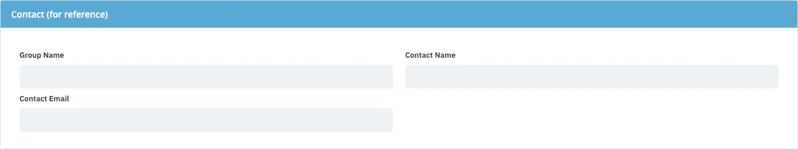
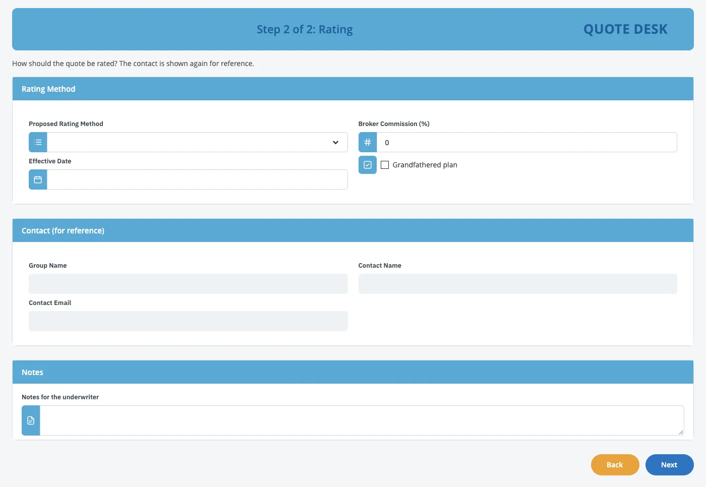

IBM Bob × BAW Dev Tools MCP · demo script
Reusable groups, built by Bob and owned in BAW.
Bob builds the screen from groups of fields that every step reuses. Then the team changes one in BAW, and Bob keeps their change.
- 45
- min
- 2
- acts
- 15
- tools
- 8
- groups
- 1
- edit kept



T−30 00:00
Run of show, then the prep.
Run of show
- OpeningWhat the team asked for last time, and today's goal
- How it worksWhat a group is, where it lives in BAW, and its settings
- Act 1: build with groupsPictures in; an app made of reusable groups out; the groups in the app's User interface
- Act 2: change it in BAWThe team edits a group; Bob rebuilds, keeps their version and asks
- Safety and questionsThe open questions from last session
- Next stepsWhich information repeats across the team's screens
Before the meeting Thirty minutes before
- Check the BAW login file (
.env) is filled in. Never show it on screen. - Get the latest project (
git switch main && git pull). Open it in Bob; the tools panel shows baw-dev-tools with 15 tools. If it shows fewer, restart baw-dev-tools in that panel. - Run
git status: it should be clean. Bob writes only inwork/during this demo. If an earlier demo left Toggle widget files, remove them first:Terminal rm -f coach-ui/src/widgets/toggle.jsx coach-ui/src/widgets/toggle.scss coach-ui/widgets/icons/toggle.svg git checkout -- coach-ui/widgets/modernizer-widgets.json - Keep
screenshots/Quote/as it is: the six pictures of the old screen (image (1).pngtoimage (6).png). It stays on this laptop and is never published. - Pick a new acronym for the app and put it in the Act 1 request (the script uses
ZZGDEMO; useZZGDEMO2after a rehearsal). Already used on the test server: ZZQI, ZZLGQ, ZZLGQI, ZZSLX, ZZGRP, ZZGRP2, ZZGWQ, ZZLGG. App Builder Widgets 1.0.4 is installed, andwork/ABW-1.0.4.twxis on this laptop. - Do one full rehearsal, so you know how long each step takes. Keep the rehearsal app as a backup.
- Open Workflow Center (Business Automation Studio) in a second browser tab.
- In Bob, pick the 🏗️ BAW App Builder mode. Make the font bigger.
- Afterwards, ask a BAW admin to archive the test snapshots: Bob cannot delete anything.
00:00 03:00 10:00
One group, placed on every step.
A group is a View inside the app: a set of fields every step places, with settings per placement.
Say · opening, 3 min
- “Last time you asked for reusable pieces: small widgets combined into a larger group, so the same information isn't rebuilt on every screen, with settings to show or hide parts.”
- “You also asked a fair question: after Bob builds it, who maintains it? Today you'll change a group yourselves in BAW, and see what Bob does with your change.”
Do Show the diagram: one group, placed on three steps, plus its Preview service.
Say
- “In BAW a screen is a coach, and its building blocks are views. A view can contain other views and bind to the app's data. That is exactly what a group is.”1
- “Bob builds each group as a View inside the app. It is listed in Workflow Center under the app's User interface, next to the services. Open it, and you change it for every step that uses it.”
- “Each group also gets a small service, ‘group Preview’, that shows only the group, so you can run and test it on its own.”
| Where it is placed | How it shows |
|---|---|
| The form step | Editable |
| A later step, “for reference” | Read-only, one field hidden |
| The review | Read-only, shown once |
| The group's Preview service | The group alone, for testing |
Say
Say
- “Bob proposes a group when three or more fields appear on two or more screens, or uses the groups you name. It shows them in the design before it builds anything.”
- “Bob has 15 tools. The ones that change something ask first.”
Do Open Bob's tools panel and show baw-dev-tools with its 15 tools.
10:00 25:00
Act 1. Build with groups.
Pictures in; an app made of reusable groups out.
Build a ZZ app from the screenshots in screenshots/Quote, image (1).png to image (6).png. They show one long page, scrolled, so some parts appear twice. Build it from App Builder Widgets, with the acronym ZZGDEMO. Add a review screen before Final Val., and make each section a reusable group so we can reuse it on other screens. Install it, test it and compare the result with the screenshots.Approved. Use the built-in template, build only the Info. tab, and leave out the product name.Step 1. Show the old screen
Do Flip through the six pictures: one long “Info” tab of a quote in an old CRM, captured while scrolling.
Say
- “All we have is pictures. Today we ask Bob for the same screen, but made of reusable groups.”
Step 2. Ask Bob
- Opens each picture and reads the screen: sections, columns, drop-downs, checkboxes. Reads the colours and the logo file.
- Writes the design, with a Groups part: each section as a group, its fields, and where it is placed (editable on the form, read-only on the review).
- Stops and shows us the design, with a few questions.
Say, while it works
- “Bob doesn't build anything before you approve the design, groups included.”
- “A group is about the information, not the look: the same fields, kept together, wherever they appear.”
Step 3. Build, install and test
- Builds the app (
create_app): one View per group, one Preview service per group, and the steps that place them. - Asks before installing. Answer yes.
- Opens it in a real browser, clicks through every step, takes a picture of each and compares them with the originals.
Do Show the form, then the review: each group appears once, read-only.
Say
- “About 60 fields in 8 groups. The review isn't a copy of the fields: it places the same groups, read-only.”
Step 4. Find the groups in BAW
In Workflow Center, open the new app and go to User interface.
- Under View: the 8 groups, for example Rating Method and Waivers and Credits.
- Under Client-side human service: the Quote service, and one Preview per group. Run one.
- Open a step, click a group: its settings show a visibility setting per optional field.
User interface
Client-side human service 3
- Quote service
- Group Contact Preview
- Rating Method Preview
View 2
- Group Contact
- Rating Method

Say
- “These are ordinary BAW views in your app. Your developers can open them, add, remove or move fields, and reuse them on other steps of this app.”
- “Nothing here needs Bob any more.”
25:00 37:00
Act 2. Change it in BAW.
The team edits a group. Bob rebuilds for another change, keeps their version and asks.
In the classic app, make Rewards Eligibility a required field.Keep BAW's version.Coach Designerrelabel a fieldsnapshotso Bob sees it(the change)Bob waits for yescreate_appnext snapshotchangedInBawkeep or replace?install_appnew snapshottest_serviceevery step
your change in BAW Bob asks you
Step 1. Change a group in Coach Designer
Open the Waivers and Credits View.
- Relabel “Waive Dependent Eligibility on Initial Enrollment” to “Waive Dependent Eligibility”. Optionally drag one field above another.
- Save.
- On the app, create a snapshot, for example
1.0.0-edited.4

Say
- “Every step that places this group shows the new label. We changed it once.”
- “The snapshot matters: Bob only sees changes that are in a snapshot.”
Step 2. Ask Bob for an unrelated change
- Shows the change it will make (Rewards Eligibility becomes required) and waits. Answer: “Yes.”
- Changes its app spec and builds the next snapshot (
create_app), on top of our snapshot. - Notices that Waivers and Credits was changed in BAW, keeps our version, and does not install yet.
- Shows what changed, and asks: keep BAW's version, or replace it with the spec's?
| Waivers and Credits | Label |
|---|---|
| Bob's spec | Waive Dependent Eligibility on Initial Enrollment |
| BAW's version | Waive Dependent Eligibility |
Say
- “Bob compares each group with what it built. It noticed our change without being told.”
- “It asks, because only we know whether the change was on purpose.”
Step 3. Keep your version
- Updates its own spec to match our group, so the next rebuild doesn't ask again.
- Installs the new snapshot (our yes to importing this app in Act 1 covers its new snapshots) and tests it.
Do Run the app. Rewards Eligibility now has a required marker, and the Waivers and Credits label is still ours.
Say
- “Two people changed the same app: you in BAW, Bob from a request. Nothing was lost, and nothing was overwritten without asking.”
- “Had we said ‘replace’, Bob would rebuild the group from its spec instead. That's also one sentence.”
37:00 42:00
Safety, questions and next steps.
Tick each rehearsal check as it passes. The page remembers them; copy the results when you are done.
checks passed
| Safety rule | Why it matters |
|---|---|
| A person approves every change, groups included | Bob shows the design, or the change, and waits before building |
| Bob asks before importing an app | Nothing reaches BAW unasked; that yes covers the app's later snapshots |
| Every install is a new snapshot | Nothing is overwritten; you can always go back |
| A group changed in BAW is kept until you say otherwise | Your edits survive Bob's next rebuild |
| Bob cannot delete anything | No tool for it exists |
| The password stays in the connector | Bob never sees it |
- Can smaller widgets be combined into larger reusable ones, keeping configuration and data binding?
- Yes. A group is a View made of field views, bound to the app's data, with a visibility setting per field and a read-only setting per placement.13 Groups inside groups, and repeating groups (lists), are not built yet.
- Which changes can we make in BAW, and which need Bob?
- Changes to a group's fields (add, remove, move, relabel) are yours: save a snapshot and Bob keeps them. Other edits, such as help text, choice lists or styling, belong in Bob's spec, because a rebuild replaces them.
- Will the generated code stay readable?
- Groups are ordinary BAW Views with BAW's own fields, opened and edited in Coach Designer. Each group has a short load script for read-only behaviour.
- How are versions managed?
- Every build is a new snapshot of the same app. A group keeps the same ID in every snapshot, so the steps keep finding it.4
- Can a group be shared across apps?
- Not yet: groups live in one app. Sharing them means moving them into a toolkit, a next step.
- Does the modern version keep the groups?
- Yes. Bob reads the groups back and builds a “(Modernized)” copy of each, with its own Preview service. Modernized groups show one field per row.
- Can other AI assistants do this?
- Yes. The connector follows the open MCP standard, so any assistant that supports MCP can use the same 15 tools.5
| Problem on stage | What to do |
|---|---|
| Bob's tools panel shows 0 tools | Restart baw-dev-tools in that panel |
| “Snapshot already exists”, or the acronym is taken | Let Bob pick the next version, or give it a new acronym: a safety rule working |
| Bob proposes no groups | Say: “Make each section a reusable group.” One long screen with no review repeats nothing, so Bob won't propose groups by itself |
| Bob doesn't notice your change in Act 2 | The change isn't in a snapshot yet: create one, then ask again |
| A Preview test fails with “detached Frame” | A test-runner timing issue when a one-step service ends; run it again |
| An install is slow | Talk through the groups diagram while it runs |
Ask the client, and write the answers down:
- Which information repeats across your screens? Those are your first groups.
- Should groups be shared across apps? That decides whether they move into a toolkit.
- Who on your team edits groups in BAW, and who asks Bob for rebuilds?
- Which screen comes next?
Say
- “In 45 minutes: pictures became an app made of reusable groups, you changed one in BAW, and Bob kept your change when it rebuilt. Every step was tested in a browser and approved by a person before it reached BAW.”
Project: https://github.com/unclethien/baw-bob-dev-tools-mcp (Apache-2.0). Not an official IBM project; use it with test servers and test apps.